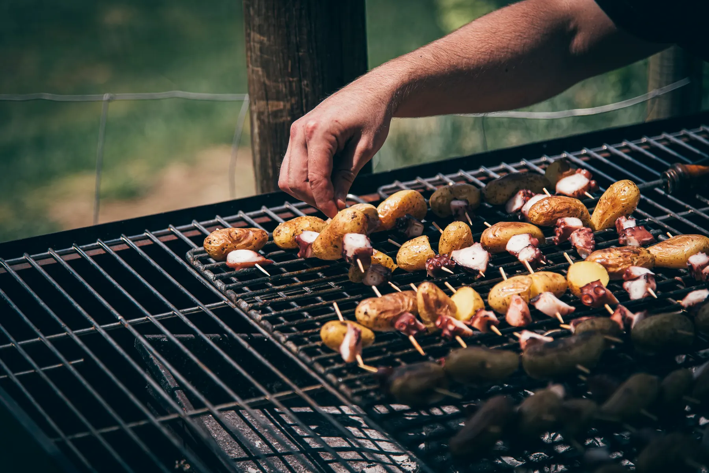
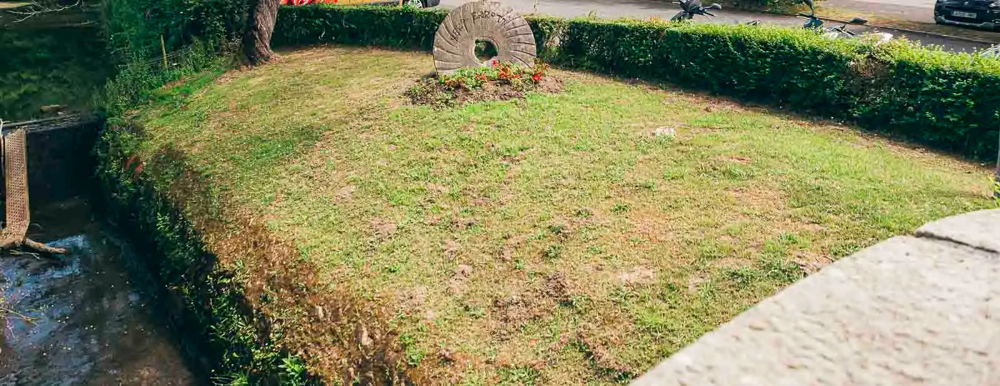
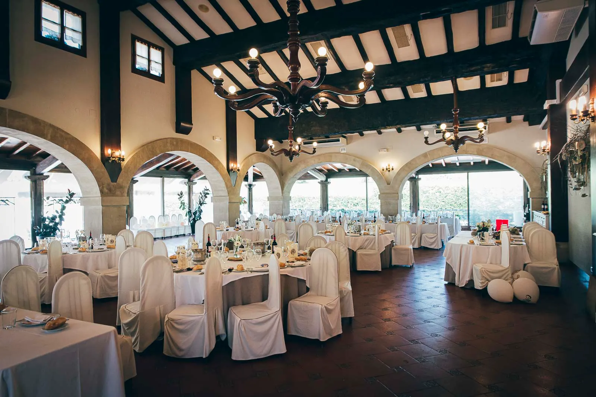
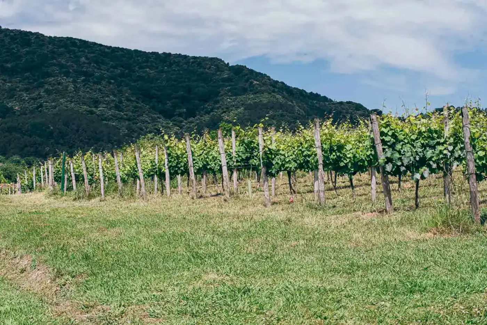
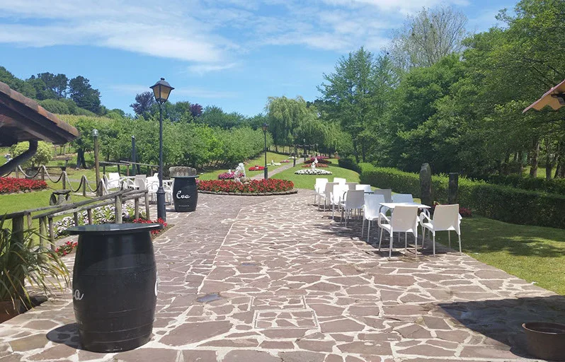

Para comer
Carta y menús
Parrilla, pescados frescos y mariscos, y menú del día desde 35 €.
Ver la cartaMuestra preparada por OI Studio para Beko Errota, con sus datos y sus fotos. Sin compromiso.
El molino · desde los años 80
A comienzos de los años 80 la familia reformó un viejo molino del barrio Jaizubia, y desde entonces no ha parado de renovarlo. Más de cuarenta años de trayectoria, y alrededor el jardín, los viñedos y los olivos de los que salen su txakoli, su sidra y su aceite.


De nuestra tierra a la mesa

Parrilla, pescados frescos y mariscos, y menú del día desde 35 €.
Ver la carta

Elegid el plan
De martes a viernes a mediodía, menú del día a 35 €: cuatro primeros y cuatro segundos a elegir, postre, vino y café. Y la carta, con pescado y carne a la parrilla.
Ver la cartaMenús de grupo desde 6 personas, con reserva previa. El menú de la casa, a 43 €, con sopa de pescado, rape a la parrilla o solomillo.
Reservar para el grupoCeremonia y lunch en el jardín, banquete en el comedor que mejor os encaje y recena de pintxos para quien quiera seguir.
Ver bodasCinco comedores que se combinan, con sitio para hasta 750 personas, y menús adaptados a cada organización.
Ver eventosPescados frescos, carnes selectas y verduras de temporada: algunos de los platos de la casa.


De la finca a la mesa
Elaborados en casa, con la uva, la manzana y la oliva de la finca.
Jardín, viñedo y comedores. Pulsad cualquier foto para verla en grande.

Mesa, grupo, boda o evento: lo hablamos por teléfono y os respondemos al momento.
943 64 31 94 O por correo: bekoerrota@bekoerrota.com